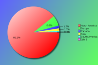

YAPC::NA 2013 - Survey Results
The following survey results are a simple presentation of the raw data.
No attempt has been made to analyse the data and compare with previous
years. See forthcoming PDFs for more in depth analysis.
Click on pie charts to view larger image version.
Demographics
These questions will help us understand who our attendees are.
Attendees:
| Count | Description |
|---|
| 121 | Responded |
| 327 | No Response |
| 448 | Total |
| 27 | Response Percentage |
Age Band:
| Count | Description |
|---|
| 0 | under 20 |
| 18 | 20 - 29 |
| 58 | 30 - 39 |
| 30 | 40 - 49 |
| 11 | 50 - 59 |
| 4 | 60 and over |
Gender:
Although this question is optional, with your help we would like to monitor changes in attendance over time.
| Count | Description |
|---|
| 103 | Male |
| 14 | Female |
| 2 | It's Complicated |
Job Type:
| Count | Description |
|---|
| 8 | CEO/Company Director/Senior Manager |
| 2 | Non-Technical Manager |
| 8 | Technical Manager |
| 8 | Technical Architect/Analyst |
| 63 | Developer |
| 13 | Engineer |
| 9 | SysAdmin |
| 2 | Student |
| 0 | Lecturer/Teacher/Trainer |
| 0 | Human Resources |
| 2 | Researcher |
| 2 | Unemployed |
| 4 | Other |
If your position covers many roles, please base this on your most senior responsibility. Also base this on the role you perform, rather than your job title. For example, a 'QA Developer' would be a 'Developer' role, and 'Information Manager' would a Manager role (Technical or Non-Technical depending upon your responsibilites)
If 'Other' please enter your professional job role or title:
- Consultant
- Database Developer, Backend Developer
- devops
- Digital Resources Archivist
- Homemaker
- Independent software consultant
- Software Architecture
Industry:
| Count | Description |
|---|
| 0 | Automotive |
| 9 | Education |
| 3 | Engineering |
| 8 | Finance |
| 5 | Government |
| 5 | IT Services |
| 52 | Internet/Web |
| 0 | Legal |
| 0 | Logistics |
| 5 | Media/Entertainment |
| 4 | Medical/Healthcare |
| 1 | Property |
| 3 | Research |
| 3 | Retail |
| 5 | Telecommunications |
| 2 | Travel |
| 4 | Unemployed |
| 12 | Other |
If you or your company undertake work within mulitple industry sectors, please select the primary one you are currently working within.
If 'Other' please enter your industry sector:
- Aerospace IT Support
- consumer electronics
- Insurance
- non-profit
- Software
- under-employed in non-tech field
- Varies by client
Region:

| Count | Description |
|---|
| 108 | North America |
| 2 | Canada |
| 1 | South America |
| 8 | Europe |
| 2 | Asia |
| 0 | Australaisa |
| 0 | Africa |
Please note this is the region you were a resident in, prior to attending the conference.
The Perl Community, YAPCs & Workshops
These questions are designed to help us understand our attendees level of involvement in the Perl community.
How do you rate your Perl knowledge?
| Count | Description |
|---|
| 13 | Beginner |
| 41 | Intermediate |
| 65 | Advanced |
How many previous YAPCs have you attended?
| Count | Description |
|---|
| 58 | This was my first YAPC |
| Attended YAPCs | 1 | 2 | 3 | 4 | 5 | 6 | 7 | 8 | 9 | 10 | 11 | 12 | 13 | 14 | total |
|---|
| YAPC::NA | 20 | 8 | 7 | 4 | 4 | 2 | 3 | 1 | 1 | 1 | 1 | - | - | 3 | 207 |
| YAPC::Europe | 8 | 2 | - | 2 | - | - | - | - | 2 | 1 | - | - | - | - | 48 |
| YAPC::Asia | 4 | - | 1 | - | 1 | - | - | - | - | - | - | - | - | - | 12 |
| YAPC::Australia / OSDC::Australia | 1 | - | - | - | - | - | - | - | - | - | - | - | - | - | 1 |
| YAPC::SA / YAPC::Brazil | - | 1 | - | - | - | - | - | - | - | - | - | - | - | - | 2 |
How many Perl Workshops have you attended?
| Count | Description |
|---|
| 80 | Never attended one |
| Attended Workshops | 1 | 2 | 3 | 4 | 5 | 6 | 7 | ... | 18 | 19 | 20 | total |
|---|
| Pittsburgh Perl Workshop | 10 | 5 | - | 1 | 1 | - | - | ... | - | - | - | 29 |
| Frozen Perl Workshop | 7 | 1 | 2 | - | - | - | - | ... | - | - | - | 15 |
| Perl Oasis Workshop | 1 | 1 | 2 | 1 | - | - | - | ... | - | - | - | 13 |
| DC / Baltimore Perl Workshop | 3 | 4 | - | - | - | - | - | ... | - | - | - | 11 |
| any European Perl Workshops | 1 | 1 | - | 2 | - | - | 1 | ... | 1 | - | 1 | 56 |
| Other Perl Workshops | 5 | - | - | - | - | - | - | ... | - | - | - | 5 |
Do you plan to attend a future YAPC/Workshop?
| Count | Description |
|---|
| 88 | Yes |
| 27 | Maybe |
| 3 | Don't Know |
| 2 | No |
If no, could you tell us why?
Particularly if this is your first YAPC, we would like to understand why you would not be able or interested in attending another event like it.
- Acoustics were terrible at after conference events. I had to leave mixer after 15 minutes of 95dB SPL noise (I measured it on my iPhone) because I could not hear and did not want to put my hearing at risk. I had to leave the banquet before game night started because the noise level inside was also too high.
Also, there was too much focus on Perl 6 at this conference and not enough focus on intermediate level topics like best practice ways to implement a <system> and best modules to use for <functionality>. We cannot use Perl 6 at my workplace for another 5-10 years until the hundreds of module users we have move off Perl 5.8.8. I am not going to focus on Perl 6 at all until there is a CPAN for it.
- I am glad I attended this year, I got a lot out of it. Perl is not widely used in my organization, and is about 15% of what my team uses. Learned a lot about what is available out there and where to find it. If available, I'd be interested in attending again, not sure if it would be supported again. Great conference though.
- I enjoy the Perl community, and I always feel welcome. However, I rarely feel like I fit in. This makes attending Perl community events relatively costly compared to many other non-programming interests of mine.
- I was unfortunately distracted by fires at home, so I feel I got a diminshed experience, through no fault of YAPC's. But what I saw was quite valuable and energetic, and I wish to try again for the full experience.
I quite enjoyed the job fair.
- I'm sure it seems like a small thing to the organizers, but the lack of women's t-shirts was like a slap in the face. The very first encounter an attendee to a conference has, after being handed a badge, is at the T-shirt table. In a conference with such a disproportionate gender balance (even compared to the programming sector as a whole), where it is so easy to solve this problem, the absence of women's T-shirts felt not like oversight but like an explicit statement: "we don't want you here."
Given that I've been lucky enough to find open source communities that do welcome diversity, why would I want to spend time around people who don't?
This problem is solved. Please see: http://geekfeminism.wikia.com/wiki/T-shirts
(on a related note, thank you for adding "it's complicated" to the gender drop-down at the top. While I didn't choose that option, I know others who greatly appreciate it.)
- It is not likely my company will pay for this again, not because this was not valuable, but because it is not their policy to send people to Perl conferences. So to attend again, it is likely I will need to pay my own way, which I probably will do.
- need to get work to pay for the trip :)
- Travel costs and time off of work are a significant cost. I directly balance that vs. the quality of *new* information available at any upcoming conferences. I'm specifically looking for:
* Major Perl projects announcing/discussing the release of a major milestone; teaching sessions are a plus.
* New impressive packages are announced/discussed; teaching sessions are a plus.
* Excellent classes (i.e. Dave Rolsky's Moose class) are made available.
Are you a member of a local Perl Mongers user group?
| Count | Description |
|---|
| 62 | Yes |
| 59 | No |
If not, do you plan to find one or start one?
| Count | Description |
|---|
| 12 | Yes |
| 22 | Maybe |
| 11 | Don't Know |
| 17 | No |
What other areas of the Perl Community do you contribute to?
| Count | Description |
|---|
| 54 | I'm a CPAN Author |
| 7 | I'm a CPAN Tester |
| 9 | I'm a board or committee member of a recognised Perl body (e.g. TPF, EPO, YEF, JPF, etc) |
| 20 | I'm a Perl project developer (e.g. Rakudo, Catalyst, Dancer, Padre, etc) |
| 31 | I have a technical blog (e.g. on blogs.perl.org or a personal blog) |
| 32 | I use or contribute to PerlMonks or other Perl forums |
| 52 | I use IRC (e.g. #perl, #yapc, or #london.pm) |
| 22 | I contribute to Perl mailing lists (e.g. P5P, Perl QA, etc) |
| 13 | other ... |
If 'Other' please enter your area of contribution
- Austin.PM President
- Err, what about contributing to perl core?
- I employ perl developers
- I have an open source tool on Github written in Perl
- I make monetary contributions to TPF
- I occasionally speak at our local PM group
- I organise meetings, workshops, exhibition booths/devrooms
- I run a Perl mongers group
- I teach Perl at the College level.
- Past-tense Mongers organizer and perl trainer
- Random CPAN docpatch contributor (via GitHub)
- Run southern oregon perl mongers
- twitter
YAPC::NA 2013
Regarding YAPC::NA 2013 in Austin, TX specifically, please answer the following as best you can.
When did you decide to come to this conference?
| Count | Description |
|---|
| 33 | I'm now a regular YAPC::NA attendee |
| 15 | After YAPC::NA 2012 in Madison, WI |
| 1 | After reading a YAPC::NA blog post |
| 0 | After joining the Facebook event group |
| 13 | I was nominated to attend by manager/colleague |
| 19 | I was recommended to attend by friend/colleague |
| 13 | After seeing a link or advert on a Perl specific website |
| 0 | After seeing a link or advert on a non-Perl website |
| 5 | After reading an email sent to a mailing list I was in |
| 0 | After seeing other promotions online/in the press |
| 21 | other ... |
If 'Other', what else helped you decide?
- after getting employer to agree to send us
- After hearing about it via Gabor Szabo on G+
- after noticing it was within driving distance
- After pushing WhiteHat to sponsor
- After seeing it was in the city I live in
- Austin.PM President
- because i was going to the US for other business
- I was offered the opportunity to attend by DreamWidth
- I've always been a YAPC::NA attendee
- I've been wanting to, since my last in 2002. This year I finally was able to. (ie. no pressing work conflicts)
- In December.
- JPA sponsored me.
- Just wanted to go
- local Perl Mongers
- mention by colleagues
- Perl Monger meeting
- Perl Weekly
- saw people talking about it on IRC
- websearch for 'Austin June 2013'
- When I got invited
- Work helped sponsor the event.
- YAPC::NA 2011
Were you a speaker?
| Count | Description |
|---|
| 76 | No |
| 14 | No, but I have spoken before at similar conferences |
| 20 | Yes, and I have spoken before at similar conferences |
| 9 | Yes, and it was my first time as a speaker |
Note that "similar conferences" includes other YAPCs, as well as Linux, Open Source or large technical events such as workshops.
If you were a speaker, would you have been able to attend if you hadn't been speaking?
| Count | Description |
|---|
| 32 | Yes |
| 8 | No |
If you weren't a speaker, would you consider speaking at a future conference?
| Count | Description |
|---|
| 58 | Yes |
| 16 | No |
| 22 | Ask me later |
What was your motivation for coming?
| Count | Description |
|---|
| 45 | the list of speakers |
| 62 | the quality of the talks scheduled |
| 21 | to be a speaker |
| 82 | to meet with Perl/project co-contributors |
| 86 | to socialise with Perl geeks |
| 28 | to meet Larry Wall |
| 41 | to visit Austin, TX |
| 20 | other ... |
If 'Other', what else motivated you to attend?
- came along with my husband who is a programmer
- cheap
- for the zerotoperl workshop and to learn from other colleagues who were attending
- gain knowledge
- I've made a fair living partly due to perl programming...it was time to meet the people responsible.
- improve perl skills
- job fair
- Job Networking
- Life experience
- pre/post training
- Promote Perl 11
- Recruitment
- speakers/talks, but non-specifically. I didn't look at the list of talks before I signed up (nor even before arriving...)
- THIS CITY AWESOME, YAPC SHUD NEVER LEAVE
- to find more great Perl folks for us
- to grok the community
- To have a bit of a holiday too
- to learn
- to learn more about perl
- Work
- Work paid for a learning experience
What aspects of the conference do you feel gave value for money?
| Count | Description |
|---|
| 112 | the talks / speakers |
| 6 | the conference bag |
| 30 | the tshirt |
| 20 | the job fair |
| 52 | the conference dinner |
| 44 | the conference venue |
| 48 | the city of Austin |
| 54 | the hallway track |
| 82 | the attendees |
| 9 | other ... |
If 'Other', what else did you think was value for money?
- Engaging the community, to accurately size up oneself
- Got plenty of new ideas and know how from the speakers I can apply to my work
- Master classes
- perl tutorial
- post conference perl class w/ Gabor
- pre/post classes
- the community autocorrection, the love
- the workshops
- Training classes
Will you wear the YAPC shirt after YAPC, given it has advertising on it?
| Count | Description |
|---|
| 91 | Yes |
| 26 | No |
Were there any talks you wanted to see, but missed due to clashes in the schedule?
| Count | Description |
|---|
| 66 | Yes |
| 44 | No |
If 'Yes', which talks did you miss?
There are always conflicts in the schedule, as it's difficult to know what everyone would like to see. However, if you could list a few talks that you missed, it would give speakers an idea whether it would be worth updating their talks for furture events.
| 8 | How to be a Web UI Developer by Casey West |
| 8 | Unicode Best Practices by Nick Patch |
| 6 | Continuously Integrating the Camel by Hugh Esco |
| 6 | Exception to Rule by Bruce Gray |
| 5 | Asynchronous programming FTW! by Sawyer X |
| 5 | Be Kind to Your Wrists (You'll Miss Them When They're Gone) by Denise Paolucci |
| 5 | Perl, dtrace and you by Mark Allen |
| 5 | Profiling memory usage by Tim Bunce |
| 4 | A Date with Perl by Dave Rolsky |
| 4 | Architecture Automation, One Alligator at Once by Matt S Trout |
| 4 | JavaScript has already won by Carl Mäsak |
| 4 | Roles versus Inheritance by Curtis Poe |
| 4 | Software Patents: Who's Behind the Curtain? by Deb Nicholson |
| 4 | Start Contributing to Perl, It's Easy! by Augustina Ragwitz |
| 4 | plenv - yet another Perl5 installation management tool by Tokuhiro Matsuno |
| 3 | Building a Web-Scale Search Engine with Perl by Greg Lindahl |
| 3 | Dancer: Getting to Hello World by R Geoffrey Avery |
| 3 | Design Decisions on p2 by Reini Urban |
| 3 | How to Make Your Users Not Want to Murder You, or Software Engineering for the Lazy by Joe McMahon |
| 3 | Method::Signatures: A How-To by Buddy Burden |
| 3 | Moe Status Update by Stevan Little |
| 3 | Notes from a Newbie by Joe Axford |
| 3 | Perl 5: Postcards from the Edge by Ricardo Signes |
| 3 | Perl 6 on the JVM by Patrick Michaud |
| 3 | Perl's Diaspora by liz |
| 3 | Regexes in Perl 6 - Zero to Perl 6 Training by Carl Mäsak |
| 3 | Testing CPAN in the 21st Century: CPANci.org by Mike Friedman |
| 3 | Testing with Test::Class::Moose by Curtis Poe |
| 3 | The Perl Foundation Review 2012 - 2013 by Karen Pauley |
| 3 | Unit-test CGIs with mod_perl2 via Plack by Nathan Gray |
| 2 | Ab(Using) the MetaCPAN API for Fun and Profit by Olaf Alders |
| 2 | Acmeism - Hacking in all Languages at Once by Ingy döt Net |
| 2 | Automate Yo'self by John Anderson |
| 2 | Bitcoins and Perl by Josh Rabinowitz |
| 2 | Continuously integrating Perl projects with Vagrant and Puppet/Chef/Salt by Mike Schilli |
| 2 | Defense Against The Dark Arts: A Project Management Survival Guide For Open Source Programmers by john napiorkowski |
| 2 | Flame Graphs for Online Performance Profiling by Yichun Zhang |
| 2 | Getting to sub signatures by Peter Martini |
| 2 | Hack Your Mac With Perl by Walt Mankowski |
| 2 | It's all about the CloudPAN by Nicholas Perez |
| 2 | Migrating Your Code from Perl 5 to Perl 6 - Zero to Perl 6 Training by Carl Mäsak |
| 2 | Packaging Perl RPMs by Daniel Sterling |
| 2 | Parallelism in Perl 6 by Patrick Michaud |
| 2 | Perl Meets Modern Web UI by Bill Humphries |
| 2 | Quick Cure for the Shame of Untested Software by Daniel Nichter |
| 2 | Techniques to speed up large test suites by Mark Stosberg |
| 2 | Telecommuting Panel Discussion by Sterling Hanenkamp |
| 2 | What if Perl 6 grammars could generate? by Jonathan Worthington |
| 2 | Wing: Web Services In An Hour by JT Smith |
| 2 | student Perl code, head-desk injuries, and you by Kevin Metcalf |
| 1 | An Ecological View of a FOSS Community: Koha by D Ruth Bavousett |
| 1 | Auditing Open Source Perl Code for Security by John Lightsey |
| 1 | Box::Calc by JT Smith |
| 1 | How to run a Perl Workshop or Conference by Heath Bair |
| 1 | Inside Bokete: Tips of making web applications with Mojolicious and other components by Yusuke Wada |
| 1 | Introduction to AngularJS by Brock Wilcox |
| 1 | Introduction to Dart by Jonathan Rockway |
| 1 | MoarVM: Overview & Analysis with a Side of Gore by Matthew Wilson |
| 1 | Opportunity Cost: *The* Key Economic Concept for Programmers by Sinan Unur |
| 1 | Sowing the Seeds of Diversity by Mark Smith |
| 1 | StatsD and You - Easy Application Metrics by Andrew Rodland |
| 1 | Testing web applications through Selenium 2 / Webdriver using Perl by Samit Badle |
| 1 | The Need for Speed: Benchmarking Perl 6 by Geoffrey Broadwell |
| 1 | The Perl 5 Slang of Perl 6 by Tobias Leich |
| 1 | Velociraptor of Christmas Future by Matt S Trout |
| 1 | Wrangling rt.cpan.org for your bidding by Thomas Sibley |
| 1 | Writing Contracts in Perl by Al Newkirk |
Additional comments:
- all of the BioPerl/Bioinfomatics talks
- many Perl6 talks
- The Perl 6 series in TCC 1.110
- Most of the Perl6 track.
- A lot, because there were so many good options! But also, lunch breaks were too short given where food was in relation to the conference center, I missed all of the first slot after lunch. (Met some awesome people over lunches, though!)
- Can't remember
- Don't remember all the talks but there were a lot of things I wanted to go to that conflicted with others that I wanted to go to, mostly because I wanted to attend everything and listen to all that I could. I didn't make it to any of the perl 6 talks, but wanted to see some of those.
- Don't remember now.
- I can't give you specific talks. I'm sure I missed some good ones. But, I'm likely to bring a member of my team along next year so we can cover more than 1 of 4 talks. We can compare notes afterward.
- i wanted to see almost all of them, except for BioPerl ones.
- I was scheduled to speak against Ricardo!! Teh suck!
- I was torn in almost every time slot.
- It was only one, I don't remember now.
- Too many to list.
There are always conflicts in the schedule, as it's difficult to know what everyone would like to see. However, if you could list a few talks that you missed, it would give speakers an idea whether it would be worth updating their talks for furture events.
Were there any speakers not present, who you would like to have seen at the conference?
| Count | Description |
|---|
| 53 | Yes |
| 50 | No |
If 'Yes', which speakers?
| 26 | Damian Conway |
| 13 | Michael Schwern |
| 7 | Randal Schwarz |
| 6 | Mark-Jason Dominus |
| 6 | Tatsuhiko Miyagawa |
| 6 | brian d foy |
| 6 | chromatic |
| 3 | Audrey Tang |
| 3 | Paul Fenwick |
| 2 | Tom Christiansen |
| 1 | Adam Kennedy |
| 1 | Allison Randal |
| 1 | Dan Sugalski |
| 1 | David Golden |
| 1 | Jan DuBois |
| 1 | Jeff Thalhammer |
| 1 | Piers Cawley |
| 1 | Robert Blackwell |
| 1 | Simon Cozens |
| 1 | Steffen Müller |
| 1 | Tomas Doran |
| 1 | Will Coleda |
Additional comments:
- Conway and the Australian guy who gives talks wearing his starfleet uniform.
- I missed Audrey Tang, although I don't know if she's doing much Perl anymore.
- schwern. it was his choice, but i missed him. we need him.
- Schwern; his absence is its own story. =/
- Too, Damien Conway, but it's always hard to get hold of him.
- The usual suspects - Damian & MJD.
- Well, I missed Schwern, obvs....
What kinds of talks would you prefer at future conferences?
| Count | Description |
|---|
| 4 | More beginner level talks |
| 15 | More intermediate level talks |
| 26 | More advanced level talks |
| 63 | It's about right |
| 11 | No preference |
Are there any topics you would specifically like to see featured?
- Refactoring and modernizing legacy codebases.
- Intro to CPAN distro authoring
- "Under the hood" talks for Moo*/Dancer/Mojolicious/DBIx/etc (targeted at devs who want to contribute to the project but are overwhelmed by the large code base and unfamiliarity with project's dev process)
- Maximizing CPAN - How to monitor, interact with, search and filter CPAN in order to identify the perfect solutions (among the hundreds of seemingly similar ones) to all of your dev problems
- A 'how to contribute' talk like Augustina Ragwitz's should be in every YAPC.
- Although perhaps it was my selection, for most of the talks that were geared at learning a technology I felt it was either beneath me or above me, I think I may have missed a few right sized ones. It might help to label things on the schedule.
- Talks that might help others (maybe I'll submit these next year): Dependency Injection, Object Oriented Design with Perl.
- Any talks about Perl and its application to new technologies (i.e. Hadoop) are most important to me.
- Anything new or interesting, that is why I liked it so much.
- API design/naming, Perl OS portability concerns, optimizing legacy P5 code, how to have a blood family off Perl and not live in your mom's basement talk, an educational talk about P5 internals, an educatoinal intermediate to advanced XSUB talk/class.
- Deep core hacking
- Design patterns, compare / contrast similar solutions (Dancer, Catalyst), challenges of using perl (OSS generally) in large business environments and other similar work / workplace training for programmers.
- Enterprise Perl - 1 million+ line codebases using Perl 5 (I have worked on two).
- Services and/or async programming in Perl (not necessarily web) -- more of this!
- gradually modernizing aging code bases, without having to totally rewrite from the bottom up
- How to migrate from procedural programming to OOP, with conversion examples.
- I like knowing about projects to revitalize Perl, either the core, or niches that have a new way of doing things (like when Plack arrived).
- I like the talks that tell you how to do things. The talk on Method::Signatures is a good example. It is also nice to have talks that introduce you to new topics and ideas like the bitcoins talk and the flamegraphs talk. Getting an idea of the state of perl is also very useful.
Maybe some "best practices" would be helpful - this is how I do things for the following reasons kind of talks.
- I love the state of Perl talks (the past, present, future was great), and of course Ricardo's "What's new in Perl".
Last year I think the Perl 6 talks were much less accessible (they seemed to me more oriented toward the Perl 6 insiders). This year, as a non-Perl-6 person, I really enjoyed many of the Perl 6 talks. They struck a great balance for me. I had no idea I'd like all the Perl 6 content as much as I did.
- I realized another "intro to PSGI/Plack" talk would have been good. It's not brand new, but a lot of people are still learning and deploying it.
- I spoke to a couple people who felt overwhelmed and would have liked more of a beginner level track. I think that beginners should be encouraged, and that would be a good track to have. Some of the people have been there so long, I was nervous to speak. The master level class was not like that though.
- I would like to have seen interesting applications of Perl and CPAN. There were a couple this year such as the Blekko talk.
I would also like to see more talks covering areas such as scientific and HPC work, databases, and toolchains.
- I'm urging a zero-to-perl track running through the entire schedule as a place to bring students, folks from other languages and others ready to learn the language.
- If it's possible, hearing more from Larry Wall would be fantastic.
- If something is listed as intro it should probably be an intro talk.
- Just more topics where Perl intersects things not-Perl. Using Perl for interesting things.
- More bioinformatics
- More parallel code; more mop type stuff; less virtual machines.
- More Perl6 stuff. Having 1 Perl6 slot and three Perl5's around the clock would be great.
- Objective comparison of web frameworks
- PDL.
- homebrew and perlbrew and cpan(?:m)? and local:lib.
- Perl 11
- Perl 6 (but that was covered about right)
- Perl internals
- Perl Tutorials
- PERL!
- The conference seemed to be heavily weighted towards "technical perlish things" and "web/gui/ui" things. That is not surprising, but I would like to see more on cool "tool chain" stuff, and more "applied perl", i.e., using perl to build cool non web/gui/ui shit.
- Topics on project management and Perl. Not discussion about code, but how to manage a project that primarily utilizes Perl.
- We can't all give talks on the bleeding edge to impress the cool kids. As one third of the attendees each year are new, we need to keep a mix of beginner talks too.
- We should have some kind of asynch master class about AnyEvent or POE
- web site operations and stuff :-)
Did you attend the banquet?
| Count | Description |
|---|
| 82 | Yes |
| 39 | No |
If the banquet was made a separate cost from the conference, would you attend it?
| Count | Description |
|---|
| 66 | Yes |
| 47 | No |
How do you rate the conference?
How would you rate your overall satisfaction of the following areas of the conference?
| Choices | 1 | 2 | 3 | 4 | 5 |
|---|
| Newsletters/Updates | 43 | 49 | 13 | 7 | - |
|---|
| Web site | 52 | 57 | 7 | 2 | - |
|---|
| Registration process | 70 | 38 | 6 | - | - |
|---|
| Directions/Maps | 51 | 50 | 14 | - | - |
|---|
| Content of the talks | 70 | 40 | 5 | 3 | - |
|---|
| Schedule efficiency | 60 | 52 | 5 | - | - |
|---|
| BOFs | 25 | 30 | 6 | 2 | - |
|---|
| Social events | 45 | 42 | 5 | 2 | - |
|---|
| Parking | 52 | 16 | 6 | 1 | - |
|---|
| Facilities | 71 | 37 | 5 | 2 | - |
|---|
| Food service | 50 | 48 | 14 | 2 | - |
|---|
| Accommodation | 45 | 39 | 5 | 3 | - |
|---|
| Staff | 76 | 29 | 3 | 1 | - |
|---|
| Overall experience | 74 | 39 | 4 | - | - |
|---|
| Value for price | 89 | 20 | 1 | - | - |
|---|
Key:
1 = Very Satisfied
2 = Somewhat satisfied
3 = Somewhat un-satisfied
4 = Very un-satisfied
5 = N/A
Conference Attendance
In order to help future organisers gauge an appropriate conference fee, how much would you (or your company) have paid for a conference ticket? Feel free to provide an answer for all rates, where corporate rate would be paid for by your company (including a Master Class place), standard rate would be the regular price paid by attendees in paid employment, and lastly the concession rate for anyone who holds proof that they are in fulltime education or are unemployed.
Corporate Rate:
| Count | Fee |
|---|
| 1 | $ 80 |
| 10 | $ 100 |
| 1 | $ 120 |
| 4 | $ 150 |
| 5 | $ 200 |
| 4 | $ 250 |
| 4 | $ 300 |
| 1 | $ 320 |
| 1 | $ 350 |
| 5 | $ 400 |
| 7 | $ 500 |
| 1 | $ 750 |
| 1 | $ 1000 |
| 1 | $ 1500 |
Standard Rate:
| Count | Fee |
|---|
| 1 | $ 50 |
| 1 | $ 75 |
| 4 | $ 80 |
| 24 | $ 100 |
| 4 | $ 120 |
| 1 | $ 125 |
| 1 | $ 130 |
| 6 | $ 150 |
| 1 | $ 160 |
| 8 | $ 200 |
| 1 | $ 200-300 |
| 1 | $ 250 |
| 1 | $ 300 |
| 1 | $ 350 |
| 1 | $ 500 |
Concession Rate:
| Count | Fee |
|---|
| 3 | $ 20 |
| 2 | $ 25 |
| 1 | $ 30 |
| 3 | $ 40 |
| 12 | $ 50 |
| 4 | $ 60 |
| 3 | $ 75 |
| 2 | $ 80 |
| 4 | $ 100 |
| 2 | $ 150 |
Would you pay more for a YAPC if we could exclude sponsorship advertising?
| Count | Description |
|---|
| 15 | Yes |
| 73 | No |
If so, how much?
| Count | Fee |
|---|
| 1 | $ 25 |
| 2 | $ 50 |
| 2 | $ 100 |
| 1 | $ 150 |
| 5 | $ 200 |
| 2 | $ 250 |
| 1 | $ 500 |
How did you pay for the conference fee?
| Count | Description |
|---|
| 10 | N/A - I was a speaker |
| 6 | N/A - I was a sponsor |
| 56 | My company paid |
| 43 | I paid out of my own pocket |
| 0 | I wasn't able to attend |
If your employer didn't send you, did they give you time off to attend?
| Count | Description |
|---|
| 37 | Yes |
| 21 | No |
Did you have holiday planned around your conference attendance?
| Count | Description |
|---|
| 74 | I came just for the conference |
| 1 | several days before only |
| 8 | 1 day before only |
| 18 | several days before and after |
| 4 | 1 day after only |
| 6 | several days after only |
Does distance prevent you from being able to attend some YAPCs?
| Count | Description |
|---|
| 60 | Yes |
| 49 | No |
What area of the US would make it easier for you to attend?
| Count | Description |
|---|
| | New England (Connecticut, Maine, Massachusetts, New Hampshire, Rhode Island and Vermont) |
| 27 | Mideast (Delaware, District of Columbia, Maryland, New Jersey, New York, and Pennsylvania) |
| 31 | Great Lakes (Illinois, Indiana, Michigan, Ohio, and Wisconsin) |
| 41 | Plains (Iowa, Kansas, Minnesota, Missouri, Nebraska, North Dakota, and South Dakota) |
| 22 | Southeast (Alabama, Arkansas, Florida, Georgia, Kentucky, Louisiana, Mississippi, North Carolina, South Carolina, Tennessee, Virginia, and West Virginia) |
| 24 | Southwest (Arizona, New Mexico, Oklahoma, and Texas) |
| 35 | Rocky Mountain (Colorado, Idaho, Montana, Utah, and Wyoming) |
| 25 | Far West (Alaska, California, Hawaii, Nevada, Oregon, and Washington) |

{kind=link}
{kind=link}
{kind=link}
{kind=link}
{kind=link}
{kind=link}